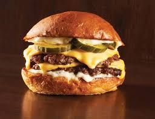
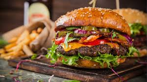
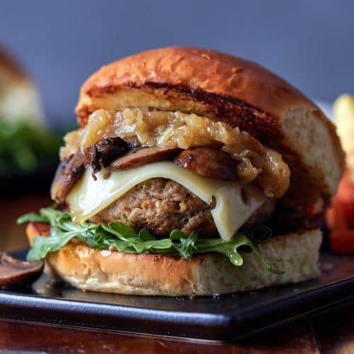

What makes it legendary:
A juicy, all-white-meat chicken breast is marinated for maximum tenderness, then hand-battered and fried to crispy perfection.Our signature buttermilk sriracha mayo adds a touch of creamy heat, while crisp lettuce, vine-ripened tomato, and red onion bring a refreshing crunch.Cradled on a toasted brioche bun, this burger is a textural masterpiece in every bite.

What makes it legendary:
Our signature patty is made from 100% fresh, never-frozen, high-quality Angus beef, seasoned to perfection and cooked to your desired doneness for maximum juiciness.Customize your burger with a symphony of crisp lettuce, vine-ripened tomato, red onion, tangy pickles, and creamy mayonnaise. Feeling adventurous? Add cheese (cheddar, swiss, pepper jack?), bacon, or our house-made BBQ sauce for a flavor twist.Your masterpiece is nestled in a toasted sesame seed bun, delivering a satisfying combination of soft and sturdy with every bite
.
What makes it legendary:
A juicy portobello mushroom takes center stage. Marinated for depth of flavor, it's grilled to tender perfection, offering a meaty texture that satisfies.Caramelized onions add a touch of sweetness, while creamy goat cheese brings a tangy counterpoint. Arugula provides a peppery kick, and roasted red peppers add a vibrant pop of color and flavor.Encased in a toasted whole-wheat bun, this burger is a symphony of textures and tastes.
.